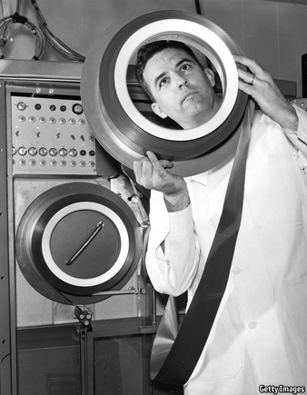

2021-01-30T16:42:21+00:00
Data storage
数据存储
數據存儲
Re-record, not fade away
重录，还在
重錄，還在
Magnetic tape is an old-fashioned technology with a promising future
磁带是一种很有前途的老式技术
磁帶是一種很有前途的老式技術

THE WHIRR of spooling magnetic tape is more likely to evoke feelings of nostalgia than technological awe. Yet tape remains important for data storage, with millions of kilometres of the stuff coiled up in the world’s data centres. Indirectly, says Mark Lantz of IBM, most computer users thus rely on tape every day.
磁带绕着卷轴转动的嗡嗡声唤起的可能更多是怀旧之情，而不是技术上的敬畏。不过磁带仍然是重要的数据存储介质，长达数百万公里的磁带盘绕在世界各地的数据中心里。IBM的马克·兰茨（Mark Lantz）说，所以大多数计算机用户每天都在间接依赖磁带。
磁帶繞着捲軸轉動的嗡嗡聲喚起的可能更多是懷舊之情，而不是技術上的敬畏。不過磁帶仍然是重要的數據存儲介質，長達數百萬公里的磁帶盤繞在世界各地的數據中心裡。IBM的馬克·蘭茨（Mark Lantz）說，所以大多數計算機用戶每天都在間接依賴磁帶。
Though tape may seem archaic, it is still getting better. In 2015 Dr Lantz’s team unveiled a version capable of squirrelling away 123 gigabytes per square inch (19Gb per square centimetre, but tapemakers still use Imperial units). In 2017 they reached 201Gb/in2. And on December 15th they revealed a design that has a density of 317Gb/in2. That rate of growth is unmatched by any of tape’s competitors.
尽管磁带好像已经是老古董了，但它仍在不断改进。2015年，兰茨的团队推出了一种每平方英寸可存储123Gb（每平方厘米19Gb，但磁带制造商仍沿用英制单位）的版本。到2017年，存储能力达到每平方英寸201Gb。去年12月15日，他们公布了一种密度达每平方英寸317Gb的设计。这样的增长速度是磁带的任何竞争对手都无法比拟的。
儘管磁帶好像已經是老古董了，但它仍在不斷改進。2015年，蘭茨的團隊推出了一種每平方英寸可存儲123Gb（每平方厘米19Gb，但磁帶製造商仍沿用英制單位）的版本。到2017年，存儲能力達到每平方英寸201Gb。去年12月15日，他們公布了一種密度達每平方英寸317Gb的設計。這樣的增長速度是磁帶的任何競爭對手都無法比擬的。
Tape’s heyday as a data-storage medium for computers was in the 1950s. Hard disks, introduced in 1956, were quickly seen as superior because they required no time-consuming spooling. Decades of selective investment mean they now also have a better density of information storage than tape. The best can manage more than 1,000Gb/in2. As a result they are in high demand—2018 saw the sale of more than 800bn gigabytes-worth, which is eight times the figure for tape. But disks have drawbacks. They are costlier than tape, have shorter lifespans and their spinning platters generate far more unwanted heat.
磁带为计算机充当数据存储介质的全盛时期是上世纪50年代。1956年硬盘问世，人们很快就觉得硬盘更好，因为不需要耗时卷磁带。几十年的选择性投资意味着它们现在的信息存储密度也比磁带大。硬盘的存储密度最多可达每平方英寸1000Gb以上。因此它们的需求量很大——2018年硬盘销量超过8000亿Gb，是磁带销量的八倍。但硬盘也有缺点。它们比磁带更贵，寿命更短，而且它们旋转的碟片生成的无用热量也多得多。
磁帶為計算機充當數據存儲介質的全盛時期是上世紀50年代。1956年硬盤問世，人們很快就覺得硬盤更好，因為不需要耗時卷磁帶。幾十年的選擇性投資意味着它們現在的信息存儲密度也比磁帶大。硬盤的存儲密度最多可達每平方英寸1000Gb以上。因此它們的需求量很大——2018年硬盤銷量超過8000億Gb，是磁帶銷量的八倍。但硬盤也有缺點。它們比磁帶更貴，壽命更短，而且它們旋轉的碟片生成的無用熱量也多得多。
This leads to tape being the medium of choice for the so-called “cold” storage of data that need to be looked at only infrequently. And disks’ advantages elsewhere may be slipping. In the 1990s hard-disk storage densities doubled every year. Over the past decade that rate of growth has dropped to 7.6%, as manufacturers run out of headroom. Smaller magnetic particles need more energy to keep them in line, and the magnets which provide this are approaching the theoretical limits of their strength. The storage density of magnetic tape, by contrast, has been increasing steadily, by 34% a year for nearly three decades. As a consequence, tape may catch up with hard disks within five years.
这让磁带成了数据“冷”存储的首选介质，所谓“冷存储”是指所存储的数据只需要偶尔查看。而且硬盘在其他方面的优势可能正在缩小。在上世纪90年代硬盘的存储密度每年翻一倍。过去十年里，这一增速已经降到了7.6%，因为制造商们已经没有了发展空间。更小的磁粒子需要更多能量来让它们保持一致的方向，而提供这种能量的磁体正接近它们的理论强度极限。相比之下，磁带的存储密度一直在稳步增长——近30年来每年增长34%。因此，磁带可能在五年内赶上硬盘。
這讓磁帶成了數據“冷”存儲的首選介質，所謂“冷存儲”是指所存儲的數據只需要偶爾查看。而且硬盤在其他方面的優勢可能正在縮小。在上世紀90年代硬盤的存儲密度每年翻一倍。過去十年里，這一增速已經降到了7.6%，因為製造商們已經沒有了發展空間。更小的磁粒子需要更多能量來讓它們保持一致的方向，而提供這種能量的磁體正接近它們的理論強度極限。相比之下，磁帶的存儲密度一直在穩步增長——近30年來每年增長34%。因此，磁帶可能在五年內趕上硬盤。
To maintain this blistering rate of growth, Dr Lantz’s team concentrated on three matters. First, they reduced the size of the magnetic grains that form a tape’s recording surface, by substituting strontium ferrite for the current industry standard of barium ferrite. Second, they shrank the size of the read heads by a factor of 30, permitting data to be packed onto narrower tracks. Third, they developed systems able to track and correct the position of the tape with nanometre accuracy as it flowed under the smaller heads, stopping it going off-track and distorting the signal. Though it may take a decade for these technological improvements to make their way into products, this sort of progress bolsters confidence in tape’s long-term utility.
为了保持这种迅猛的增速，兰茨的团队专注于做三件事。首先，他们用锶铁氧体代替了目前工业标准的钡铁氧体，缩小了形成磁带记录表面的磁性颗粒的尺寸。其次，他们将读取磁头的尺寸缩小到原来的三十分之一，这样数据就可以被存储到更窄的轨道上。第三，他们开发了一套系统，以纳米级的精度跟踪并纠正从更小的磁头下经过的磁带的位置，防止它偏离轨道或扭曲信号。尽管这些技术上的改进可能要花上十年才能真正应用到产品中，但这种进步增强了人们对长期使用磁带的信心。
為了保持這種迅猛的增速，蘭茨的團隊專註於做三件事。首先，他們用鍶鐵氧體代替了目前工業標準的鋇鐵氧體，縮小了形成磁帶記錄表面的磁性顆粒的尺寸。其次，他們將讀取磁頭的尺寸縮小到原來的三十分之一，這樣數據就可以被存儲到更窄的軌道上。第三，他們開發了一套系統，以納米級的精度跟蹤並糾正從更小的磁頭下經過的磁帶的位置，防止它偏離軌道或扭曲信號。儘管這些技術上的改進可能要花上十年才能真正應用到產品中，但這種進步增強了人們對長期使用磁帶的信心。
Other innovations may be coming, too. Ohkoshi Shin-ichi of the University of Tokyo, for example, advocates using particles of epsilon iron oxide. This material is particularly magnetically stable, meaning its grain-size can be reduced (and thus storage density increased) without any risk of the field flipping randomly and thus changing what is encoded.
其他的创新也可能到来。例如，东京大学的大越慎一提出使用ε氧化铁粒子。这种材料的磁性特别稳定，意味着它的颗粒还可以更小（从而增加存储密度），还不会有磁场随机翻转从而改变存储内容的风险。
其他的創新也可能到來。例如，東京大學的大越慎一提出使用ε氧化鐵粒子。這種材料的磁性特別穩定，意味着它的顆粒還可以更小（從而增加存儲密度），還不會有磁場隨機翻轉從而改變存儲內容的風險。
Taped up
常转常新
常轉常新
Demand for more storage will certainly be there. Estimates suggest that four times more data will be generated in 2025 than in 2019. In the part of the data-storage market where tape currently reigns supreme, it is likely to remain so for a while.
对更多存储空间的需求肯定会存在。据估计，2025年产生的数据将是2019年的四倍。在目前磁带占主导地位的那一块数据存储市场，这种情况很可能还会持续一段时间。
對更多存儲空間的需求肯定會存在。據估計，2025年產生的數據將是2019年的四倍。在目前磁帶佔主導地位的那一塊數據存儲市場，這種情況很可能還會持續一段時間。
The biggest threat to tape comes from the flash-drive technology used in SD cards and USB sticks. Flash relies on a flow of electrons through transistors, rather than on magnetised particles read by mechanical components, so it is capable of better data densities even than hard disks. Lack of moving parts also makes such solid-state devices faster at writing and retrieving information. Flash drives are, however, more costly than magnetic storage and do not last as long. This makes them ten times more expensive per byte per year of storage than hard disks, and nearly 50 times more expensive than tape. They are therefore too dear to use for anything but the most important jewels in the data vault. Until that changes, the reel is likely to continue.■
对磁带最大的威胁来自SD卡和U盘中使用的闪存技术。闪存依靠的是通过晶体管的电子流，而不是机械部件读取的磁化粒子，因此它的数据密度甚至比硬盘还要高。没有转动的部件也让这种静态设备能够更快地写入和检索信息。不过，闪存比磁存储更贵，存储期更短。这使得它们每字节每年的存储成本是硬盘的10倍、磁带的近50倍。它们太贵了，所以只能用来存储数据库中最宝贵的信息。除非这一点发生变化，否则磁带应该还会继续转下去。
對磁帶最大的威脅來自SD卡和U盤中使用的閃存技術。閃存依靠的是通過晶體管的電子流，而不是機械部件讀取的磁化粒子，因此它的數據密度甚至比硬盤還要高。沒有轉動的部件也讓這種靜態設備能夠更快地寫入和檢索信息。不過，閃存比磁存儲更貴，存儲期更短。這使得它們每字節每年的存儲成本是硬盤的10倍、磁帶的近50倍。它們太貴了，所以只能用來存儲數據庫中最寶貴的信息。除非這一點發生變化，否則磁帶應該還會繼續轉下去。